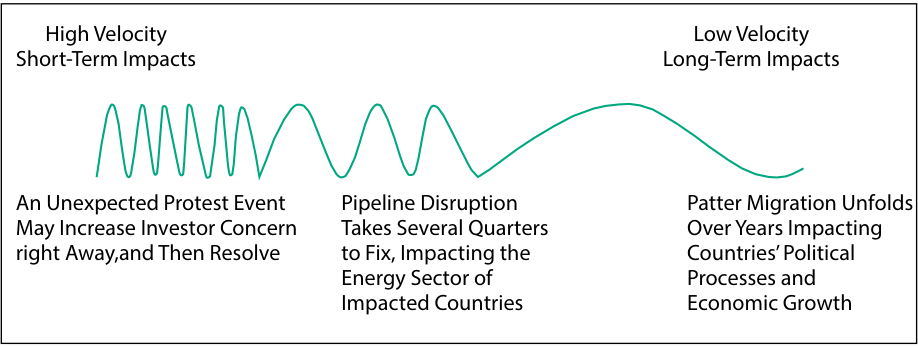
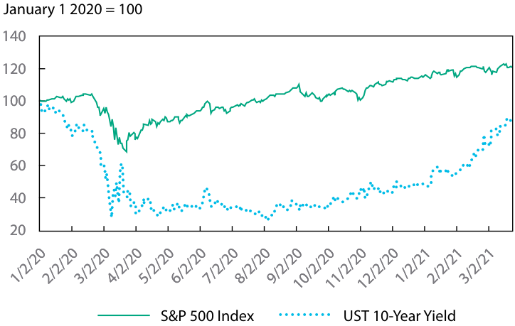
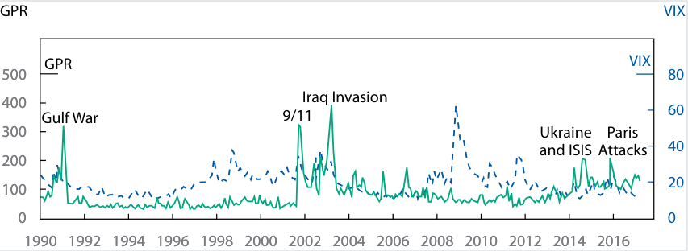

Learning Module 5 Introduction to Geopolitics - Part 4: Geopolitical Risk and the Investment Process
Volume 2: Economics
Learning Module 5 Introduction to Geopolitics
Part 4/4: Geopolitical Risk and the Investment Process (PDF Pages 187–202)
Tập 2: Kinh tế học (Volume 2: Economics)
Học phần 5: Giới thiệu về Địa chính trị (Learning Module 5: Introduction to Geopolitics)
Phần 4/4: Rủi ro Địa chính trị và Quy trình Đầu tư (Geopolitical Risk and the Investment Process) (Trang PDF 187–202)
- In the following table, match the geopolitical tool with the most appropriate example of each tool.
- Trong bảng dưới đây, hãy nối công cụ địa chính trị với ví dụ phù hợp nhất của mỗi công cụ.
Geopolitical Tool Example 1. Financial A. Nationalization 2. Economic B. Espionage 3. National security C. Free exchange of currency across borders
| Công cụ Địa chính trị (Geopolitical Tool) | Ví dụ (Example) |
|---|---|
| 1. Tài chính (Financial) | A. Quốc hữu hóa (Nationalization) |
| 2. Kinh tế (Economic) | B. Gián điệp (Espionage) |
| 3. An ninh quốc gia (National security) | C. Tự do chuyển đổi tiền tệ qua biên giới (Free exchange of currency across borders) |
Solution:
Lời giải (Solution):
Option 1 (Financial) matches with C (Free exchange of currency across borders).
Lựa chọn 1 (Tài chính) khớp với C (Tự do chuyển đổi tiền tệ qua biên giới).
Option 2 (Economic) matches with A (Nationalization).
Lựa chọn 2 (Kinh tế) khớp với A (Quốc hữu hóa).
Option 3 (National security) matches with B (Espionage).
Lựa chọn 3 (An ninh quốc gia) khớp với B (Gián điệp).
GEOPOLITICAL RISK AND THE INVESTMENT PROCESS
RỦI RO ĐỊA CHÍNH TRỊ VÀ QUY TRÌNH ĐẦU TƯ (GEOPOLITICAL RISK AND THE INVESTMENT PROCESS)
7
7
describe the impact of geopolitical risk on investments
mô tả tác động của rủi ro địa chính trị đối với các khoản đầu tư (describe the impact of geopolitical risk on investments)
There is no shortage of attention to geopolitical risk in financial market analysis. However, the extent to which investors incorporate geopolitical risk into their decision making will vary widely with their investment objectives and risk tolerance. Some investors may be considered takers of geopolitical risk. These investors may incorporate geopolitical risk into their analysis only to the extent that it affects the long-term attractiveness of asset classes or strategies. For other investors, geopolitical risk may be a central component of their investment process. For these portfolios, monitoring dislocations is an achievable and meaningful driver of alpha creation, where focused geopolitical risk analysis can reduce the impact and severity of adverse events and enhance the potential for upside growth. For example, an investor that anticipates an important political transition may enact portfolio hedges to shield against market volatility or may use the market volatility as a buying opportunity—in either case, improving investment outcomes.
Không hề thiếu sự quan tâm dành cho rủi ro địa chính trị trong phân tích thị trường tài chính. Tuy nhiên, mức độ mà các nhà đầu tư tích hợp rủi ro địa chính trị vào quá trình ra quyết định của mình sẽ rất khác nhau tùy thuộc vào mục tiêu đầu tư (investment objectives) và mức độ chấp nhận rủi ro (risk tolerance) của họ. Một số nhà đầu tư có thể được coi là những người chấp nhận (takers) rủi ro địa chính trị. Những nhà đầu tư này có thể chỉ đưa rủi ro địa chính trị vào phân tích của mình ở mức độ mà nó ảnh hưởng đến sức hấp dẫn dài hạn của các loại tài sản (asset classes) hoặc chiến lược đầu tư. Đối với các nhà đầu tư khác, rủi ro địa chính trị có thể là một cấu phần trung tâm trong quy trình đầu tư của họ. Đối với những danh mục đầu tư này, việc theo dõi các sự lệch chuẩn / xáo trộn thị trường (dislocations) là một động lực khả thi và có ý nghĩa để tạo ra lợi nhuận vượt trội (alpha creation), nơi mà việc phân tích rủi ro địa chính trị có trọng tâm có thể làm giảm tác động cũng như mức độ nghiêm trọng của các sự kiện bất lợi và nâng cao tiềm năng tăng trưởng tích cực (upside growth). Ví dụ, một nhà đầu tư dự đoán trước một sự chuyển giao chính trị quan trọng có thể thực hiện các biện pháp phòng vệ danh mục đầu tư (portfolio hedges) để che chắn trước sự biến động của thị trường hoặc có thể tận dụng sự biến động của thị trường như một cơ hội mua vào — trong cả hai trường hợp, đều giúp cải thiện kết quả đầu tư.
What follows is a discussion of the impact of geopolitical risk on the investment environment. We begin with a discussion of types of geopolitical risk, followed by a means of assessing those risks and the ways that they can manifest in a portfolio.
Phần tiếp theo là cuộc thảo luận về tác động của rủi ro địa chính trị đối với môi trường đầu tư. Chúng ta bắt đầu bằng việc thảo luận về các loại rủi ro địa chính trị, tiếp theo là phương thức đánh giá những rủi ro đó và những cách thức mà chúng có thể biểu hiện trong một danh mục đầu tư.
Types of Geopolitical Risk
Các loại Rủi ro Địa chính trị (Types of Geopolitical Risk)
There are three basic types of geopolitical risk: event risk, exogenous risk, and thematic risk.
Có ba loại rủi ro địa chính trị cơ bản: rủi ro sự kiện (event risk), rủi ro ngoại sinh (exogenous risk), và rủi ro theo chủ đề / xu hướng dài hạn (thematic risk).
Event risk evolves around set dates, such as elections, new legislation, or other date-driven milestones, such as holidays or political anniversaries, known in advance. Political events often result in changes to investor expectations related to a country’s cooperative stance. As a result, risk analysts often use political calendars as a starting place for assessing event risk.
Rủi ro sự kiện (Event risk) xoay quanh những ngày ấn định, chẳng hạn như các cuộc bầu cử, đạo luật mới, hoặc các cột mốc gắn liền với thời điểm cụ thể khác như ngày lễ hoặc ngày kỷ niệm chính trị đã được biết trước. Các sự kiện chính trị thường dẫn đến những thay đổi trong kỳ vọng của nhà đầu tư liên quan đến lập trường hợp tác của một quốc gia. Do đó, các nhà phân tích rủi ro thường sử dụng lịch sự kiện chính trị (political calendars) làm điểm khởi đầu để đánh giá rủi ro sự kiện.
One example of event risk is the United Kingdom’s referendum on European Union membership (Exhibit 11). This was a known event risk; it was planned for 23 June 2016, well in advance. The stakes of the election were well understood, with
Một ví dụ về rủi ro sự kiện là cuộc trưng cầu dân ý của Vương quốc Anh về tư cách thành viên Liên minh Châu Âu (Bảng minh họa 11). Đây là một rủi ro sự kiện đã được biết trước; nó đã được lên kế hoạch từ rất sớm cho ngày 23 tháng 6 năm 2016. Những hệ lụy đặt cược của cuộc bỏ phiếu này đã được hiểu rất rõ, với
many years’ worth of politically cooperative steps likely to unwind in the event of a “yes” vote. Most investors expected a “no” vote; when the results proved the opposite, investor expectations related to the United Kingdom’s cooperative stance were drastically changed.
thành quả của nhiều năm tiến hành các bước hợp tác chính trị nhiều khả năng sẽ bị tháo gỡ trong trường hợp kết quả bỏ phiếu là “đồng ý rời đi” (“yes” vote). Hầu hết các nhà đầu tư kỳ vọng kết quả bỏ phiếu là “không rời đi” (“no” vote); khi kết quả thực tế diễn ra ngược lại, kỳ vọng của nhà đầu tư liên quan đến lập trường hợp tác của Vương quốc Anh đã thay đổi một cách chóng mặt.
Exhibit 11: Market Reaction to Event Risk: United Kingdom’s EU Referendum, 2016
Bảng minh họa 11: Phản ứng của Thị trường trước Rủi ro Sự kiện: Cuộc Trưng cầu Dân ý về EU của Vương quốc Anh, 2016 (Exhibit 11: Market Reaction to Event Risk: United Kingdom’s EU Referendum, 2016)
| First Day | 30 Days | 1 Year | |
|---|---|---|---|
| FTSE | −3.1% | 6.2% | 17.1% |
| GBP | −8.1% | −11.9% | −14.5% |
| 10-year bond yield (Gilt) | −21.0% | −42.0% | −25.0% |
| Chỉ tiêu | Ngày đầu tiên (First Day) | 30 Ngày (30 Days) | 1 Năm (1 Year) |
|---|---|---|---|
| Chỉ số cổ phiếu FTSE | −3,1% | 6,2% | 17,1% |
| Đồng Bảng Anh (GBP) | −8,1% | −11,9% | −14,5% |
| Lợi suất trái phiếu chính phủ kỳ hạn 10 năm (10-year bond yield – Gilt) | −21,0% | −42,0% | −25,0% |
The United Kingdom’s vote to end its European Union membership came as a surprise to many investors. Several asset classes were immediately affected, including equities, the national currency, and government bonds. In the weeks that followed, investors adjusted to the news but became concerned about what a rollback in political cooperation might mean for long-term economic growth. As a result, equity prices recovered, but the British pound continued on a steady decline. Government bond yields declined precipitously in the month following the vote, recovering somewhat as the year progressed.
Việc Vương quốc Anh bỏ phiếu chấm dứt tư cách thành viên Liên minh Châu Âu đã gây bất ngờ cho nhiều nhà đầu tư. Một số loại tài sản đã bị ảnh hưởng ngay lập tức, bao gồm cổ phiếu, đồng nội tệ và trái phiếu chính phủ. Trong những tuần tiếp theo, các nhà đầu tư đã điều chỉnh thích ứng với tin tức này nhưng bắt đầu lo ngại về việc sự đảo ngược trong hợp tác chính trị có thể mang ý nghĩa gì đối với tăng trưởng kinh tế dài hạn. Kết quả là, giá cổ phiếu đã phục hồi, nhưng đồng bảng Anh vẫn tiếp tục đà suy giảm đều đặn. Lợi suất trái phiếu chính phủ sụt giảm mạnh trong tháng tiếp theo sau cuộc bỏ phiếu, trước khi phục hồi đôi chút khi năm đó trôi qua.
It is useful to note that the predictability of an event does not necessarily change its likelihood, its speed of impact, or the size of impact on investors; however, it does give investors more time to prepare a response. We will come back to this example and others in this section when we discuss the assessment of geopolitical threats.
Cần lưu ý rằng khả năng dự đoán trước của một sự kiện không nhất thiết làm thay đổi xác suất xảy ra, tốc độ tác động hoặc quy mô tác động của nó lên các nhà đầu tư; tuy nhiên, nó mang lại cho các nhà đầu tư nhiều thời gian hơn để chuẩn bị phương án ứng phó. Chúng ta sẽ quay lại ví dụ này và các ví dụ khác trong phần này khi thảo luận về việc đánh giá các mối đe dọa địa chính trị.
Exogenous risk is a sudden or unanticipated risk that affects either a country’s cooperative stance, the ability of non-state actors to globalize, or both (Exhibit 12). Examples include sudden uprisings, invasions, or the aftermath of natural disasters.
Rủi ro ngoại sinh (Exogenous risk) là một rủi ro đột ngột hoặc không lường trước được làm ảnh hưởng đến lập trường hợp tác của một quốc gia, khả năng toàn cầu hóa của các chủ thể phi nhà nước, hoặc cả hai (Bảng minh họa 12). Các ví dụ bao gồm các cuộc nổi dậy bất ngờ, các cuộc xâm lược, hoặc hậu quả của thiên tai.
Exhibit 12: Market Reaction to Exogenous Risk: Japan’s Fukushima Nuclear Disaster, 2011
Bảng minh họa 12: Phản ứng của Thị trường trước Rủi ro Ngoại sinh: Thảm họa Hạt nhân Fukushima tại Nhật Bản, 2011 (Exhibit 12: Market Reaction to Exogenous Risk: Japan’s Fukushima Nuclear Disaster, 2011)
| First Day | 30 Days | 1 Year | |
|---|---|---|---|
| Nikkei | −6.2% | −5.2% | −3.6% |
| Yen | −0.3% | 3.4% | 0.5% |
| Japanese 10-year bondyield | −3.3% | 5.9% | −22.3% |
| Chỉ tiêu | Ngày đầu tiên (First Day) | 30 Ngày (30 Days) | 1 Năm (1 Year) |
|---|---|---|---|
| Chỉ số cổ phiếu Nikkei | −6,2% | −5,2% | −3,6% |
| Đồng Yên (Yen) | −0,3% | 3,4% | 0,5% |
| Lợi suất trái phiếu chính phủ Nhật Bản kỳ hạn 10 năm (Japanese 10-year bond yield) | −3,3% | 5,9% | −22,3% |
On 11 March 2011, Japan was struck with an earthquake and subsequent tsunami wave, resulting in significant loss of human life, homes, and productive capital. The natural disaster also caused a significant nuclear accident that resulted in further human, property, and environmental damage and also disrupted supply chains. The initial market response reflected market concern: Equities fell, the currency depreciated, and bond prices rose. In the weeks that followed and as the toll of the environmental disaster became more apparent, Japanese equity markets continued to suffer, declining up to 20.4 percent (as of 25 November 2011) from their levels the day of the earthquake.
Vào ngày 11 tháng 3 năm 2011, Nhật Bản đã hứng chịu một trận động đất và sóng thần tiếp theo sau đó, gây ra tổn thất nghiêm trọng về sinh mạng con người, nhà cửa và tư bản sản xuất. Thảm họa thiên nhiên này cũng gây ra một tai nạn hạt nhân nghiêm trọng dẫn đến những thiệt hại sâu hơn về người, tài sản và môi trường, đồng thời làm gián đoạn các chuỗi cung ứng. Phản ứng ban đầu của thị trường phản ánh mối lo ngại của giới đầu tư: Giá cổ phiếu sụt giảm, đồng tiền mất giá và giá trái phiếu tăng lên (lợi suất giảm). Trong những tuần tiếp theo và khi mức độ thiệt hại của thảm họa môi trường trở nên rõ ràng hơn, thị trường cổ phiếu Nhật Bản tiếp tục chịu tổn thất, giảm tới 20,4% (tính đến ngày 25 tháng 11 năm 2011) so với mức vào ngày xảy ra động đất.
As the environmental costs of the accident became clear, this event contributed to a shifting stance on political cooperation on environmental issues. Less than three months after the incident, Germany decided to phase out nuclear power entirely by 2022. Belgium confirmed plans to exit nuclear power by 2025, and such countries as Italy, Spain, and Switzerland opted not to reintroduce nuclear energy programs.
Khi những tổn thất về môi trường của vụ tai nạn trở nên rõ ràng, sự kiện này đã góp phần làm thay đổi lập trường hợp tác chính trị về các vấn đề môi trường. Chưa đầy ba tháng sau sự cố, Đức đã quyết định loại bỏ dần năng lượng hạt nhân hoàn toàn vào năm 2022. Bỉ xác nhận kế hoạch từ bỏ điện hạt nhân vào năm 2025, và các quốc gia như Ý, Tây Ban Nha và Thụy Sĩ đã chọn không tái khởi động các chương trình năng lượng hạt nhân.
Finally, thematic risks are known risks that evolve and expand over a period of time. Climate change, pattern migration, the rise of populist forces, and the ongoing threat of terrorism fall into this category.
Cuối cùng, rủi ro theo chủ đề / xu hướng dài hạn (thematic risks) là những rủi ro đã được nhận diện nhưng phát triển và mở rộng qua một khoảng thời gian. Biến đổi khí hậu, các xu hướng di cư theo khuôn mẫu (pattern migration), sự trỗi dậy của các lực lượng dân túy và mối đe dọa khủng bố thường trực đều thuộc nhóm này.
Cyber threats are another example of thematic risk (Exhibit 13). Cyber risks include any attempt to expose, alter, disable, destroy, steal, or gain information through unauthorized access to or unauthorized use of computer systems. These threats began with the expansion of internet and computer use and have increased in number and scale. Now, the number of records stolen or affected by cyberattacks is in the billions per year. While the basic nature of cyberattacks is consistent, the size, scale, and sophistication of attacks have increased over time.
Các mối đe dọa an ninh mạng (Cyber threats) là một ví dụ khác về rủi ro theo chủ đề (Bảng minh họa 13). Rủi ro an ninh mạng bao gồm bất kỳ nỗ lực nào nhằm phơi bày, thay đổi, vô hiệu hóa, phá hủy, đánh cắp hoặc thu thập thông tin thông qua việc truy cập trái phép hoặc sử dụng trái phép các hệ thống máy tính. Những mối đe dọa này bắt đầu cùng với sự mở rộng của việc sử dụng Internet và máy tính, và đã gia tăng cả về số lượng lẫn quy mô. Giờ đây, số lượng hồ sơ dữ liệu bị đánh cắp hoặc bị ảnh hưởng bởi các cuộc tấn công mạng đã lên tới hàng tỷ hồ sơ mỗi năm. Mặc dù bản chất cơ bản của các cuộc tấn công mạng là nhất quán, nhưng kích thước, quy mô và mức độ tinh vi của các cuộc tấn công đã tăng lên theo thời gian.
Exhibit 13: Market Reaction to Thematic Risk: Equifax Data Breach, 2017
Bảng minh họa 13: Phản ứng của Thị trường trước Rủi ro theo Chủ đề: Vụ Rò rỉ Dữ liệu của Equifax, 2017 (Exhibit 13: Market Reaction to Thematic Risk: Equifax Data Breach, 2017)
| First Day | 30 Days | 1 Year | |
|---|---|---|---|
| Stock price | −13.7% | −22.0% | −4.8% |
| Financial services industry | 0.9% | 10.3% | 18.6% |
| Chỉ tiêu | Ngày đầu tiên (First Day) | 30 Ngày (30 Days) | 1 Năm (1 Year) |
|---|---|---|---|
| Giá cổ phiếu (Stock price) | −13,7% | −22,0% | −4,8% |
| Ngành dịch vụ tài chính (Financial services industry) | 0,9% | 10,3% | 18,6% |
In September 2017, the US consumer credit reporting company Equifax announced a data breach that exposed personal information, including names, dates of birth, and personal identification numbers of approximately 147 million people. The initial market reaction was very negative. Equifax’s equity price fell by 13.7 percent in one day and by 34.9 percent over the first week, reaching its low on 15 September 2017. Over time, the impact moderated somewhat, but Equifax still underperformed the financial services industry in the year after its data breach.
Vào tháng 9 năm 2017, công ty báo cáo tín dụng tiêu dùng Equifax của Hoa Kỳ đã thông báo về một vụ xâm phạm dữ liệu làm lộ thông tin cá nhân, bao gồm tên, ngày sinh và số định danh cá nhân của khoảng 147 triệu người. Phản ứng ban đầu của thị trường là hết sức tiêu cực. Giá cổ phiếu của Equifax đã giảm 13,7% chỉ trong một ngày và giảm 34,9% trong tuần đầu tiên, chạm mức đáy vào ngày 15 tháng 9 năm 2017. Theo thời gian, tác động này đã dịu bớt phần nào, nhưng cổ phiếu Equifax vẫn có kết quả hoạt động kém hơn (underperformed) so với ngành dịch vụ tài chính trong một năm sau vụ rò rỉ dữ liệu của mình.
At first, the data breach affected Equifax the most, including instituting protections and credit monitoring for affected customers, without significant impacts on the broader financial industry.
Lúc đầu, vụ rò rỉ dữ liệu ảnh hưởng nặng nề nhất đến bản thân Equifax, bao gồm việc phải thiết lập các biện pháp bảo vệ và giám sát tín dụng cho những khách hàng bị ảnh hưởng, mà chưa gây ra tác động đáng kể nào lên toàn ngành tài chính nói chung.
However, the event also triggered broader impacts over time. Other companies have increased spending on cybersecurity and instituted stronger processes, including software upgrades.
Tuy nhiên, sự kiện này cũng đã kích hoạt những tác động rộng lớn hơn theo thời gian. Các công ty khác đã tăng chi tiêu cho an ninh mạng và thiết lập các quy trình chặt chẽ hơn, bao gồm cả việc nâng cấp phần mềm.
EXAMPLE 10
VÍ DỤ 10 (EXAMPLE 10)
Geopolitical Risk and the Investor
Rủi ro Địa chính trị và Nhà đầu tư (Geopolitical Risk and the Investor)
- Which of the following types of risks are known in advance? Select all that apply.
-
A. Event risk
-
B. Exogenous risk
-
C. Thematic risk
-
Solution:
- Những loại rủi ro nào sau đây được biết trước (known in advance)? Hãy chọn tất cả các đáp án đúng.
-
A. Rủi ro sự kiện (Event risk)
-
B. Rủi ro ngoại sinh (Exogenous risk)
-
C. Rủi ro theo chủ đề (Thematic risk)
-
Lời giải (Solution):
A and C are correct.
A và C là đáp án đúng.
Event risk evolves around set dates, and thematic risk is a known risk that evolves and expands over a period of time. Exogenous risk is a sudden or unanticipated risk.
Rủi ro sự kiện xoay quanh những ngày ấn định, và rủi ro theo chủ đề là một rủi ro đã được biết trước nhưng phát triển và mở rộng qua một khoảng thời gian. Rủi ro ngoại sinh là một rủi ro đột ngột hoặc không lường trước được.
Assessing Geopolitical Threats
Đánh giá các Mối đe dọa Địa chính trị (Assessing Geopolitical Threats)
Geopolitical risk is always present in the investment environment, and these risks can affects investments in many different ways—from broad macroeconomic levels, to industry impacts, down to individual companies. The question for investors is whether the particular geopolitical risk is relevant for their portfolio management decisions. To make this assessment, an investor considers geopolitical risk in terms of the following three areas:
Rủi ro địa chính trị luôn hiện hữu trong môi trường đầu tư, và những rủi ro này có thể ảnh hưởng đến các khoản đầu tư theo nhiều cách khác nhau — từ cấp độ kinh tế vĩ mô rộng lớn, tới các tác động cấp ngành công nghiệp, cho đến từng công ty riêng lẻ. Câu hỏi đặt ra cho các nhà đầu tư là liệu một rủi ro địa chính trị cụ thể có liên quan trọng yếu đến các quyết định quản lý danh mục đầu tư của họ hay không. Để thực hiện đánh giá này, nhà đầu tư xem xét rủi ro địa chính trị trên ba khía cạnh sau:
-
likelihood it will occur,
-
velocity (speed) of its impact, and
-
size and nature of that impact .
-
xác suất (likelihood) rủi ro đó sẽ xảy ra,
-
tốc độ (velocity/speed) tác động của nó, và
-
quy mô và bản chất của tác động (impact) đó.
Likelihood
Xác suất xảy ra (Likelihood)
The likelihood of a risk is the probability that it will occur. Measuring likelihood is a challenging process. The highly unpredictable nature of many risks—their build over time, the many and conflicting motivations of actors involved—means this exercise can be more art than science. However, we may use the framework from Lesson 4 to assess the basic likelihood of risk occurring. Highly collaborative and globalized countries are, on balance, less likely to experience geopolitical risk because the political, economic, and financial costs of partners inflicting those risks are higher. That same interconnectedness, however, may make multilateral countries more vulnerable to certain risks. Their operation in and cooperation with other countries means a risk posed to any of those countries may also have an impact on itself. Similarly, multiple risk exposures may increase the impact of that risk when it occurs.
Xác suất (likelihood) của một rủi ro là khả năng mà rủi ro đó sẽ xảy ra. Việc đo lường xác suất là một quá trình đầy thách thức. Bản chất hết sức khó dự đoán của nhiều rủi ro — sự tích tụ dần theo thời gian của chúng, vô số động cơ đan xen và xung đột nhau của các chủ thể liên quan — đồng nghĩa với việc công việc này có thể mang tính nghệ thuật nhiều hơn là khoa học. Tuy nhiên, chúng ta có thể sử dụng khung phân tích từ Bài học 4 để đánh giá xác suất cơ bản của việc phát sinh rủi ro. Xét trên tổng thể, các quốc gia có tính hợp tác cao và toàn cầu hóa sâu rộng ít có khả năng gặp phải rủi ro địa chính trị hơn vì chi phí về mặt chính trị, kinh tế và tài chính đối với các đối tác khi gây ra những rủi ro đó là cao hơn. Tuy nhiên, chính sự kết nối phụ thuộc lẫn nhau đó lại có thể khiến các quốc gia theo chủ nghĩa đa phương dễ bị tổn thương hơn trước một số rủi ro nhất định. Việc họ hoạt động tại các quốc gia khác và hợp tác với các quốc gia đó có nghĩa là một rủi ro đặt ra cho bất kỳ quốc gia đối tác nào cũng có thể gây tác động ngược lại lên chính họ. Tương tự như vậy, việc tiếp xúc với nhiều nguồn rủi ro cùng lúc có thể làm tăng mức độ tác động của rủi ro đó khi nó xảy ra.
Of course, many other factors may increase the likelihood that a risk may occur. Internal political stability, economic need, and the motivations of governmental actors play an important role in increasing the likelihood of disruptive action. In fact, these considerations are so plentiful and intertwined that geopolitical risk monitoring tools have emerged as key components of many research offerings for investors. The numerous scenarios for any given risk make measuring risk likelihood a potentially never-ending task. As a result, investors must balance the time spent on this activity with the relative importance of its input to the investment process.
Tất nhiên, nhiều yếu tố khác có thể làm tăng xác suất xảy ra rủi ro. Sự ổn định chính trị nội bộ, nhu cầu kinh tế và động cơ của các chủ thể chính phủ đóng vai trò quan trọng trong việc làm tăng khả năng xảy ra các hành động gây gián đoạn. Trên thực tế, những cân nhắc này nhiều và đan xen chặt chẽ đến mức các công cụ theo dõi rủi ro địa chính trị đã nổi lên như những cấu phần then chốt trong nhiều dịch vụ cung cấp báo cáo nghiên cứu cho các nhà đầu tư. Vô số kịch bản có thể xảy ra đối với bất kỳ một rủi ro nhất định nào khiến việc đo lường xác suất rủi ro có nguy cơ trở thành một công việc không bao giờ có hồi kết. Do đó, các nhà đầu tư phải cân bằng giữa thời gian dành cho hoạt động này với tầm quan trọng tương đối của thông tin đầu vào mà nó mang lại cho quy trình đầu tư.
The examples used in the section “Types of Geopolitical Risk” in Lesson 6, can help us put a finer point on this concept. Of the three risks described, a cyber risk may have been the most likely to occur and to affect a given investment strategy, whereas the United Kingdom’s “yes” vote and Russia’s annexation of Crimea were less likely at the time in which they occurred. Of course, all three of these risks have different potential impacts on investors. As a result, likelihood should be considered only in conjunction with the velocity and impact of the risk.
Các ví dụ được sử dụng trong phần “Các loại Rủi ro Địa chính trị” có thể giúp chúng ta làm rõ hơn khái niệm này. Trong ba rủi ro được mô tả, rủi ro an ninh mạng có lẽ là rủi ro có xác suất xảy ra cao nhất và dễ ảnh hưởng đến một chiến lược đầu tư nhất định nhất, trong khi việc Vương quốc Anh bỏ phiếu “đồng ý rời EU” và việc Nga sáp nhập bán đảo Crimea có xác suất thấp hơn vào thời điểm chúng xảy ra. Tất nhiên, cả ba rủi ro này đều có những tác động tiềm tàng khác nhau đối với các nhà đầu tư. Do đó, xác suất chỉ nên được xem xét khi kết hợp cùng với tốc độ và mức độ tác động của rủi ro.
Velocity
Tốc độ tác động (Velocity)
The velocity of geopolitical risk is the pace at which it affects an investor portfolio. For the sake of simplicity, we explore short-term or “high-velocity” impacts, medium-term, and long-term or “low-velocity” impacts (see Exhibit 14).
Tốc độ (velocity) của rủi ro địa chính trị là nhịp độ mà theo đó rủi ro ảnh hưởng đến danh mục đầu tư của nhà đầu tư. Để đơn giản hóa, chúng ta khám phá các tác động ngắn hạn hay “tốc độ cao” (high-velocity), trung hạn, và dài hạn hay “tốc độ thấp” (low-velocity) (xem Bảng minh họa 14).
In the short term, we may see volatility in the markets affecting entire industries or even the entire market. Exogenous or “black swan” events tend to fit into this category, causing market volatility and investor flight to quality. A black swan risk is an event that is rare and difficult to predict but has an important impact. Investors with the appropriate time horizon and risk tolerance may make tactical changes to their investment choices as a result of these events. Long-term changes are unlikely to be necessary.
Trong ngắn hạn, chúng ta có thể chứng kiến sự biến động trên các thị trường làm ảnh hưởng đến toàn bộ các ngành công nghiệp hoặc thậm chí toàn bộ thị trường chung. Các sự kiện ngoại sinh hoặc sự kiện “thiên nga đen” (“black swan” events) có xu hướng thuộc về nhóm này, gây ra biến động thị trường và làn sóng dịch chuyển dòng vốn tìm đến các tài sản an toàn / chất lượng cao (flight to quality) của giới đầu tư. Rủi ro thiên nga đen (black swan risk) là một sự kiện hiếm gặp và khó dự đoán nhưng lại có tác động vô cùng lớn. Các nhà đầu tư có khung thời gian đầu tư và mức độ chấp nhận rủi ro phù hợp có thể thực hiện những thay đổi mang tính chiến thuật (tactical changes) đối với các lựa chọn đầu tư của mình do hệ quả của những sự kiện này. Những thay đổi mang tính dài hạn thường không cần thiết.
Risks with a medium-term impact may begin to impair companies’ processes, costs, and investment opportunities, resulting in lower valuations. These risks tend to be distributed toward specific sectors, meaning they will affect some companies much more than others.
Những rủi ro có tác động trung hạn có thể bắt đầu làm suy giảm quy trình hoạt động, chi phí và cơ hội đầu tư của các công ty, dẫn đến mức định giá thấp hơn. Những rủi ro này có xu hướng phân bổ tập trung vào các lĩnh vực cụ thể, nghĩa là chúng sẽ ảnh hưởng đến một số công ty nhiều hơn hẳn so với các công ty khác.
Long-term risks may have important environmental, social, governance, and other impacts. This can affect an investor’s asset allocation—including choice of asset classes and investment styles—for a long-term horizon; however, the immediate impact on portfolios is likely to be more limited.
Những rủi ro dài hạn có thể gây ra các tác động quan trọng về môi trường, xã hội, quản trị (ESG) và các tác động khác. Điều này có thể ảnh hưởng đến việc phân bổ tài sản của nhà đầu tư — bao gồm việc lựa chọn các loại tài sản và phong cách đầu tư (investment styles) — cho khung thời gian dài hạn; tuy nhiên, tác động tức thời lên các danh mục đầu tư nhiều khả năng sẽ hạn chế hơn.
Exhibit 14: Risk Velocity
Bảng minh họa 14: Tốc độ Rủi ro (Exhibit 14: Risk Velocity)

Chú thích hình ảnh (Từ Tốc độ Cao — High Velocity đến Tốc độ Thấp — Low Velocity): - Tốc độ Cao (High Velocity) / Tác động Ngắn hạn (Short-Term Impacts): Một sự kiện biểu tình bất ngờ có thể làm tăng mối lo ngại của nhà đầu tư ngay lập tức, và sau đó được giải quyết (An Unexpected Protest Event May Increase Investor Concern right Away, and Then Resolve). - Tốc độ Trung bình / Tác động Trung hạn: Sự gián đoạn đường ống dẫn dầu/khí mất vài quý để khắc phục, tác động đến lĩnh vực năng lượng của các quốc gia bị ảnh hưởng (Pipeline Disruption Takes Several Quarters to Fix, Impacting the Energy Sector of Impacted Countries). - Tốc độ Thấp (Low Velocity) / Tác động Dài hạn (Long-Term Impacts): Xu hướng di cư diễn ra qua nhiều năm, tác động đến các tiến trình chính trị và tăng trưởng kinh tế của các quốc gia (Pattern Migration Unfolds Over Years Impacting Countries’ Political Processes and Economic Growth).
Note that some risks have more than one speed of impact on investments. The United Kingdom’s referendum outcome to exit the EU had some immediate impacts, notably a decline in the value of the British pound sterling and other forms of market volatility. Over time, low-velocity impacts have become more apparent and more lasting for investors. Higher transaction costs and the unwind of previous forms of political cooperation—including the freedom of movement between the United Kingdom and the EU—are generating important impacts on investment outcomes and overall economic growth.
Lưu ý rằng một số rủi ro có nhiều hơn một tốc độ tác động lên các khoản đầu tư. Kết quả cuộc trưng cầu dân ý rời khỏi EU của Vương quốc Anh đã gây ra một số tác động tức thời, đáng chú ý là sự sụt giảm giá trị của đồng bảng Anh và các hình thức biến động thị trường khác. Theo thời gian, các tác động có tốc độ thấp (low-velocity impacts) đã trở nên rõ ràng hơn và kéo dài dai dẳng hơn đối với các nhà đầu tư. Chi phí giao dịch cao hơn và việc tháo gỡ các hình thức hợp tác chính trị trước đây — bao gồm cả quyền tự do di chuyển giữa Vương quốc Anh và EU — đang tạo ra những tác động quan trọng đối với kết quả đầu tư và tăng trưởng kinh tế tổng thể.
EXAMPLE 11
VÍ DỤ 11 (EXAMPLE 11)
Geopolitical Risk Velocity and Investor Reaction
Tốc độ Rủi ro Địa chính trị và Phản ứng của Nhà đầu tư (Geopolitical Risk Velocity and Investor Reaction)
- Hãy nối tốc độ tiềm tàng của một rủi ro địa chính trị với phản ứng nhiều khả năng xảy ra nhất của nhà đầu tư trong số những phản ứng được liệt kê trong bảng sau:
- Match the potential velocity of a geopolitical risk with the most likely investor reaction among those listed in the following table:
| Tốc độ Rủi ro Địa chính trị (Geopolitical Risk Velocity) | Phản ứng của Nhà đầu tư (Investor Reaction) |
|---|---|
| 1. Thấp (Low) | A. Điều chỉnh các khoản đầu tư vào các nhóm ngành cụ thể (Adjust investments in specific sectors) |
| 2. Trung bình (Medium) | B. Dịch chuyển dòng vốn sang các tài sản an toàn/chất lượng (Flight to quality) |
| 3. Cao (High) | C. Điều chỉnh phân bổ tài sản (Adjust asset allocation) |
| Geopolitical Risk Velocity | Investor Reaction |
|---|---|
| 1. Low | A. Adjust investments in specific sectors |
| 2. Medium | i B. Flight to quality |
| 3. High | C. Adjust asset allocation |
| Solution: |
Lời giải (Solution):
Option 1 (Low) matches with C (Adjust asset allocation). Option 2 (Medium) matches with A (Adjust investments in specific sectors). O p tion 3 ( Hi g h ) matches with B ( Fli g ht to q ualit y) .
Lựa chọn 1 (Thấp) khớp với C (Điều chỉnh phân bổ tài sản). Lựa chọn 2 (Trung bình) khớp với A (Điều chỉnh các khoản đầu tư vào các nhóm ngành cụ thể). Lựa chọn 3 (Cao) khớp với B (Dịch chuyển dòng vốn sang các tài sản an toàn/chất lượng – Flight to quality).
EXAMPLE 12
VÍ DỤ 12 (EXAMPLE 12)
Geopolitical Risk and the Investor
Rủi ro Địa chính trị và Nhà đầu tư (Geopolitical Risk and the Investor)
- Describe the three areas that an investor should consider when assessing geopolitical risk.
- Solution:
- Hãy mô tả ba khía cạnh mà một nhà đầu tư cần xem xét khi đánh giá rủi ro địa chính trị.
- Lời giải (Solution):
An investor should consider the following three areas when assessing geopolitical risk: the likelihood it will occur, the velocity of its impact, and the size and nature of that impact. The likelihood that it will occur considers the probability that geopolitical risk will occur. The velocity of its impact is the pace at which it affects an investor portfolio. The impact can manifest in many ways and can be discrete in size or broad in nature.
Một nhà đầu tư cần xem xét ba khía cạnh sau đây khi đánh giá rủi ro địa chính trị: xác suất rủi ro sẽ xảy ra (likelihood it will occur), tốc độ tác động của nó (velocity of its impact), và quy mô cũng như bản chất của tác động đó (size and nature of that impact). Xác suất xảy ra xem xét khả năng mà rủi ro địa chính trị sẽ diễn ra. Tốc độ tác động của nó là nhịp độ mà theo đó rủi ro ảnh hưởng đến danh mục đầu tư của nhà đầu tư. Tác động có thể biểu hiện theo nhiều cách và có thể mang tính riêng lẻ (discrete) về quy mô hoặc mang tính diện rộng (broad) về bản chất.
Impact of Geopolitical Risk
Tác động của Rủi ro Địa chính trị (Impact of Geopolitical Risk)
A risk’s impact on investor portfolios can manifest in many different ways. For the sake of this framework for assessing risk, suffice it to say that investors should consider the size of any risk’s impact when gauging its importance to the investment process. A high-impact risk may merit extensive study of its drivers and motivations, whereas a low-impact risk may not. In addition, the size of a risk’s impact may be compounded by external factors. For example, risk tends to have a greater impact on markets experiencing a general contraction or economic downturn.
Tác động của một rủi ro lên danh mục đầu tư của nhà đầu tư có thể biểu hiện theo nhiều cách khác nhau. Trong khuôn khổ đánh giá rủi ro này, chỉ cần nói rằng các nhà đầu tư nên xem xét quy mô tác động của bất kỳ rủi ro nào khi đo lường tầm quan trọng của nó đối với quy trình đầu tư. Một rủi ro có tác động lớn có thể xứng đáng được nghiên cứu sâu rộng về các động lực và nguyên nhân của nó, trong khi một rủi ro có tác động thấp có thể không cần đến mức đó. Ngoài ra, quy mô tác động của một rủi ro có thể bị khuếch đại thêm bởi các yếu tố bên ngoài. Ví dụ, rủi ro có xu hướng gây ra tác động lớn hơn đối với các thị trường vốn đang trải qua một đợt thu hẹp chung hoặc suy thoái kinh tế (economic downturn).
Impact may also be discrete or broad in nature. Discrete impacts are those that affect only one company or sector at a time, whereas broad impacts are felt more holistically by a sector, a country, or the global economy. Cyber risks may be considered in this light. In the event of a cyberattack, only the companies and investment strategies exposed to that company will be affected. However, cyber risks may also have a broader impact by increasing monitoring, due diligence, and security costs for all companies and investors seeking to avoid them.
Tác động cũng có thể mang bản chất riêng lẻ (discrete) hoặc diện rộng (broad). Tác động riêng lẻ là những tác động chỉ ảnh hưởng đến một công ty hoặc một lĩnh vực tại một thời điểm, trong khi tác động diện rộng được cảm nhận một cách toàn diện hơn bởi cả một lĩnh vực, một quốc gia hoặc nền kinh tế toàn cầu. Rủi ro an ninh mạng có thể được xem xét dưới góc độ này. Trong trường hợp xảy ra một cuộc tấn công mạng, chỉ những công ty và các chiến lược đầu tư có tiếp xúc với công ty đó mới bị ảnh hưởng. Tuy nhiên, rủi ro an ninh mạng cũng có thể gây ra tác động diện rộng hơn bằng cách làm tăng chi phí giám sát, thẩm định chuyên sâu (due diligence) và bảo mật đối với tất cả các công ty và nhà đầu tư đang tìm cách phòng tránh chúng.
When assessing geopolitical risk for portfolio management, investors should consider all three geopolitical risk factors—likelihood, velocity, and size and nature of impact—together. For example, a highly likely risk with very little impact to the portfolio may not merit extensive analysis and investor attention. However, a highly impactful risk with a low likelihood of occurring may merit building a scenario for response but not regular monitoring and assessment. Between these extremes, investors must consider their goals and risk tolerance to identify high-priority risks.
Khi đánh giá rủi ro địa chính trị để quản lý danh mục đầu tư, các nhà đầu tư nên xem xét kết hợp cả ba yếu tố rủi ro địa chính trị — xác suất, tốc độ, cùng quy mô và bản chất của tác động. Ví dụ, một rủi ro có xác suất xảy ra rất cao nhưng lại có tác động rất nhỏ đến danh mục đầu tư có thể không đáng để phân tích sâu rộng và thu hút sự chú ý của nhà đầu tư. Tuy nhiên, một rủi ro có tác động cực lớn nhưng xác suất xảy ra thấp có thể xứng đáng để xây dựng một kịch bản ứng phó nhưng không cần phải theo dõi và đánh giá thường xuyên. Nằm giữa hai thái cực này, các nhà đầu tư phải cân nhắc mục tiêu và mức độ chấp nhận rủi ro của mình để xác định những rủi ro cần được ưu tiên cao.
Scenario Analysis
Phân tích Kịch bản (Scenario Analysis)
Geopolitical risks seldom develop in linear fashion, making it difficult to monitor and forecast their likelihood, velocity, and impact on a portfolio as well as difficult to address those changes through portfolio action. As a result, many investors deploy an approach that includes scenario analysis and signposting rather than a single point forecast.
Rủi ro địa chính trị hiếm khi diễn biến theo kiểu tuyến tính, khiến việc theo dõi và dự báo xác suất, tốc độ cũng như tác động của chúng lên một danh mục đầu tư trở nên khó khăn, đồng thời cũng khó giải quyết những thay đổi đó thông qua hành động điều chỉnh danh mục đầu tư. Do đó, nhiều nhà đầu tư triển khai một phương pháp tiếp cận bao gồm phân tích kịch bản (scenario analysis) và theo dõi các dấu hiệu chỉ báo (signposting) thay vì sử dụng một dự báo điểm đơn lẻ (single point forecast).
Scenario analysis is the process of evaluating portfolio outcomes across potential circumstances or states of the world. Scenarios help investment teams understand where they stand with respect to a risk that might cause them to change their behavior. Scenario analysis can strengthen a team’s conviction about its prioritization and calls to action, thereby helping it make good investment choices at opportune moments.
Phân tích kịch bản (Scenario analysis) là quá trình đánh giá kết quả của danh mục đầu tư qua các hoàn cảnh hoặc trạng thái tiềm năng khác nhau của thế giới. Các kịch bản giúp đội ngũ đầu tư hiểu được họ đang đứng ở đâu trước một rủi ro có thể khiến họ phải thay đổi hành vi của mình. Phân tích kịch bản có thể củng cố niềm tin vững chắc (conviction) của đội ngũ đầu tư về thứ tự ưu tiên và các lời kêu gọi hành động, từ đó giúp họ đưa ra những lựa chọn đầu tư đúng đắn vào những thời điểm thích hợp.
Scenarios can take the form of qualitative analysis, quantitative measurement, or both. A simple framework for qualitative scenario building begins with developing a base case for the event. What is the most impactful outcome of the risk? How likely
Các kịch bản có thể mang hình thức phân tích định tính (qualitative analysis), đo lường định lượng (quantitative measurement), hoặc cả hai. Một khung phân tích đơn giản để xây dựng kịch bản định tính bắt đầu bằng việc phát triển một kịch bản cơ sở (base case) cho sự kiện đó. Kết quả có tác động lớn nhất của rủi ro đó là gì? Khả năng
is that risk/outcome to occur in the first place? From there, investors can consider upside and downside scenarios. Is it a persistent tail risk or a short-term shock? How are markets likely to recover once the event has taken place? Considering alternate futures for key risks will drive more precise perspective around what constitutes key developments in the most important risks.
rủi ro/kết quả đó xảy ra ngay từ đầu là cao đến mức nào? Từ đó, các nhà đầu tư có thể xem xét các kịch bản tích cực (upside scenarios) và kịch bản tiêu cực (downside scenarios). Đó là một rủi ro đuôi (tail risk) dai dẳng hay chỉ là một cú sốc ngắn hạn? Các thị trường nhiều khả năng sẽ phục hồi như thế nào một khi sự kiện đó đã diễn ra? Việc xem xét các viễn cảnh tương lai thay thế nhau cho những rủi ro chính sẽ thúc đẩy góc nhìn chính xác hơn xoay quanh những gì cấu thành nên các diễn biến then chốt trong những rủi ro quan trọng nhất.
Quantitative scenarios can vary widely by sophistication. One form of a simple quantitative scenario is a stylized scenario in which portfolio sensitivity is measured against one key factor relevant to the portfolio, such as interest rates, asset prices, or exchange rates. Another involves using circumstances from extreme events to help build quantitative tests for portfolio resilience. It is important to have reasonable ambitions, however. Quantitative scenarios can be complicated because of the secondary and linked impacts of geopolitical risks to securities in the portfolio.
Các kịch bản định lượng có thể rất khác nhau về mức độ phức tạp tinh vi. Một hình thức của kịch bản định lượng đơn giản là kịch bản mô phỏng theo khuôn mẫu (stylized scenario), trong đó độ nhạy của danh mục đầu tư được đo lường trước một yếu tố then chốt có liên quan đến danh mục đầu tư, chẳng hạn như lãi suất, giá tài sản hoặc tỷ giá hối đoái. Một hình thức khác bao gồm việc sử dụng các hoàn cảnh từ những sự kiện cực đoan để giúp xây dựng các bài kiểm tra định lượng về khả năng chống chịu của danh mục đầu tư (portfolio resilience). Tuy nhiên, điều quan trọng là phải đặt ra những tham vọng hợp lý. Các kịch bản định lượng có thể rất phức tạp do những tác động thứ cấp và liên đới của rủi ro địa chính trị đối với các chứng khoán trong danh mục đầu tư.
Good scenario building can prompt investors to alter their risk prioritization, making it a useful tool not only for tracking risks but also for deciding which portfolio actions may be valuable to take. Good scenario analysis also requires a consistent commitment of investors’ time and resources. Teams that read similar research or speak with similar client groups may be affected by groupthink , the practice of thinking or making decisions as a group in a way that discourages creativity or individual responsibility. For scenario analysis to be useful in portfolio management, teams must work hard to build creative processes, identify and track scenarios, and assess the need for action on a regular basis.
Việc xây dựng kịch bản tốt có thể thúc đẩy các nhà đầu tư thay đổi thứ tự ưu tiên rủi ro của mình, biến nó thành một công cụ hữu ích không chỉ để theo dõi rủi ro mà còn để quyết định xem những hành động điều chỉnh danh mục đầu tư nào là có giá trị cần thực hiện. Phân tích kịch bản tốt cũng đòi hỏi sự cam kết nhất quán về thời gian và nguồn lực của các nhà đầu tư. Những đội ngũ cùng đọc các báo cáo nghiên cứu giống nhau hoặc trò chuyện với các nhóm khách hàng tương tự nhau có thể bị ảnh hưởng bởi tư duy tập thể / tư duy bầy đàn (groupthink), tức thói quen suy nghĩ hoặc ra quyết định theo nhóm theo cách làm nhụt chí sự sáng tạo hoặc trách nhiệm cá nhân. Để phân tích kịch bản trở nên hữu ích trong quản lý danh mục đầu tư, các đội ngũ phải làm việc chăm chỉ nhằm xây dựng các quy trình sáng tạo, xác định và theo dõi các kịch bản, đồng thời đánh giá nhu cầu hành động một cách thường xuyên.
Tracking Risks According to Signposts
Theo dõi Rủi ro dựa trên các Dấu hiệu Chỉ báo (Tracking Risks According to Signposts)
To build a portfolio’s resilience to unexpected change, asset managers develop processes in advance that allow for rapid course correction. In other words, by creating plans for addressing priority risks as they occur, investors can help reduce the events’ impact on investment outcomes.
Để xây dựng khả năng chống chịu của danh mục đầu tư trước những thay đổi bất ngờ, các nhà quản lý tài sản phát triển trước các quy trình cho phép điều chỉnh hướng đi một cách nhanh chóng. Nói cách khác, bằng cách lập kế hoạch giải quyết các rủi ro ưu tiên ngay khi chúng xảy ra, các nhà đầu tư có thể giúp làm giảm tác động của các sự kiện đó lên kết quả đầu tư.
One important process is identifying signposts for priority risk. A signpost is an indicator, market level, data piece, or event that signals a risk is becoming more or less likely. An analyst can think of signposts like a traffic light. If quantitative and qualitative evidence suggest that a risk is low in likelihood, velocity, or impact, then the signposts are flashing green, or no action needed. If signposts are flashing amber, indicating that a risk is medium in likelihood, velocity, or impact, then higher caution and preparedness against that risk may be warranted. As a risk rises in likelihood, velocity, or impact, an action plan may be necessary.
Một quy trình quan trọng là xác định các dấu hiệu chỉ báo (signposts) cho rủi ro ưu tiên. Một dấu hiệu chỉ báo / cột mốc tín hiệu (signpost) là một chỉ số, mức thị trường, mẩu dữ liệu hoặc sự kiện phát tín hiệu cho thấy một rủi ro đang trở nên có nhiều hoặc ít khả năng xảy ra hơn. Một nhà phân tích có thể hình dung các dấu hiệu chỉ báo giống như đèn giao thông. Nếu bằng chứng định lượng và định tính cho thấy một rủi ro đang ở mức thấp về xác suất, tốc độ hoặc tác động, thì các dấu hiệu chỉ báo đang nhấp nháy đèn xanh, tức là không cần hành động gì. Nếu các dấu hiệu chỉ báo đang nhấp nháy đèn vàng, cho thấy một rủi ro đang ở mức trung bình về xác suất, tốc độ hoặc tác động, thì sự thận trọng cao hơn và tâm thế chuẩn bị sẵn sàng trước rủi ro đó có thể là điều cần thiết. Khi một rủi ro gia tăng về xác suất, tốc độ hoặc tác động, một kế hoạch hành động có thể sẽ cần được triển khai.
Identifying signposts should equip a team to differentiate signal from noise and react when signposts flash red. For instance, when the market environment moves to either risk-on or risk-off, it is important to identify what actions should be taken next or communications made. Good signposts are anchored in the key assumptions made up-front around a scenario and mark whether a scenario is materializing.
Việc xác định các dấu hiệu chỉ báo sẽ trang bị cho đội ngũ đầu tư khả năng phân biệt giữa tín hiệu thực và nhiễu (differentiate signal from noise) và phản ứng kịp thời khi các dấu hiệu chỉ báo nhấp nháy đèn đỏ. Chẳng hạn, khi môi trường thị trường chuyển sang trạng thái ưa thích rủi ro (risk-on) hoặc né tránh rủi ro (risk-off), điều quan trọng là phải xác định những hành động nào cần được thực hiện tiếp theo hoặc những thông điệp truyền thông nào cần được đưa ra. Các dấu hiệu chỉ báo tốt được neo giữ vững chắc vào những giả định then chốt được đặt ra ngay từ đầu xoay quanh một kịch bản và đánh dấu xem liệu kịch bản đó có đang trở thành hiện thực hay không.
Let’s return to our example of the United Kingdom’s Brexit referendum for context. Before 2014, signposts for geopolitical risk in the United Kingdom may have flashed “green.” Attitudes toward European Union membership were divided, and while there is always a possibility of disruptive geopolitical change, a reduction in political cooperation with the European Union was not clearly defined. Then, when the referendum was announced in 2015, signposts for disruptive change became more likely and faster in potential velocity, resulting in a higher required level of portfolio manager attention. In May 2016, when phone polls suggested that the “leave” vote was moving to the majority, signposts flashed “red” and attentive portfolio managers prepared action plans for election day.
Hãy quay lại ví dụ của chúng ta về cuộc trưng cầu dân ý Brexit của Vương quốc Anh để hiểu rõ bối cảnh. Trước năm 2014, các dấu hiệu chỉ báo cho rủi ro địa chính trị tại Vương quốc Anh có thể đã nhấp nháy “đèn xanh”. Thái độ đối với tư cách thành viên Liên minh Châu Âu có sự chia rẽ, và mặc dù luôn có khả năng xảy ra sự thay đổi địa chính trị gây xáo trộn, nhưng sự suy giảm trong hợp tác chính trị với Liên minh Châu Âu vẫn chưa được định hình rõ ràng. Sau đó, khi cuộc trưng cầu dân ý được công bố vào năm 2015, các dấu hiệu chỉ báo cho sự thay đổi gây xáo trộn trở nên có khả năng xảy ra cao hơn và nhanh hơn về tốc độ tiềm tàng, dẫn đến việc đòi hỏi mức độ chú ý cao hơn từ các nhà quản lý danh mục đầu tư. Vào tháng 5 năm 2016, khi các cuộc thăm dò qua điện thoại cho thấy tỷ lệ phiếu bầu “rời đi” (“leave” vote) đang tiến tới mức đa số, các dấu hiệu chỉ báo đã nhấp nháy “đèn đỏ” và những nhà quản lý danh mục đầu tư sâu sát đã chuẩn bị sẵn các kế hoạch hành động cho ngày bầu cử.
Identifying the right signposts can require some trial and error. A basic rule of thumb for distinguishing signal from noise is the distinction between politics and policy. For example, there can be a big difference in “politics” between two leaders,
Việc xác định đúng các dấu hiệu chỉ báo có thể đòi hỏi một số quá trình thử và sai (trial and error). Một quy tắc kinh nghiệm cơ bản để phân biệt tín hiệu thực với nhiễu là sự phân biệt giữa chính trị (politics) và chính sách (policy). Ví dụ, có thể có một sự khác biệt rất lớn về mặt “chính trị” giữa hai nhà lãnh đạo,
but the “policies” they enact are what create larger or more durable portfolio impacts. Political developments can serve as meaningful signposts, as they can indicate a change in the risk’s likelihood or pace. However, analysts are frequently knocked off course by following developments that do not necessarily indicate a change in real economic or market outcomes. Instead, analysts should look for policy changes to guide their portfolio management decisions.
nhưng những “chính sách” mà họ ban hành mới là thứ tạo ra những tác động lớn hơn hoặc bền vững hơn đối với danh mục đầu tư. Các diễn biến chính trị có thể đóng vai trò là những dấu hiệu chỉ báo có ý nghĩa, vì chúng có thể cho thấy sự thay đổi trong xác suất hoặc nhịp độ của rủi ro. Tuy nhiên, các nhà phân tích thường xuyên bị chệch hướng do chạy theo những diễn biến không nhất thiết phản ánh một sự thay đổi trong kết quả kinh tế thực hoặc kết quả thị trường. Thay vào đó, các nhà phân tích nên tìm kiếm những thay đổi về chính sách để định hướng cho các quyết định quản lý danh mục đầu tư của mình.
Some combinations of economic and financial market circumstances serve as strong warnings of potential trouble. For example, high inflation and deteriorating employment can signal political unrest. A pegged currency and rapidly declining export value (particularly for commodities exporters) can prompt a change in exchange rate policy. Often, particularly for emerging markets, these signposts will change before official data are released. If a portfolio relies on country-level economic conditions, data screens should be used to help identify any red flags early.
Một số sự kết hợp của các hoàn cảnh kinh tế và thị trường tài chính đóng vai trò là những lời cảnh báo mạnh mẽ về rắc rối tiềm tàng. Ví dụ, lạm phát cao đi kèm với tình trạng việc làm ngày càng tồi tệ có thể báo hiệu sự bất ổn chính trị. Một đồng tiền neo tỷ giá cố định (pegged currency) đi kèm với giá trị xuất khẩu sụt giảm nhanh chóng (đặc biệt là đối với các nước xuất khẩu hàng hóa nguyên liệu) có thể thúc đẩy một sự thay đổi trong chính sách tỷ giá hối đoái. Thông thường, đặc biệt là đối với các thị trường mới nổi, những dấu hiệu chỉ báo này sẽ thay đổi trước khi dữ liệu chính thức được công bố. Nếu một danh mục đầu tư phụ thuộc vào các điều kiện kinh tế cấp quốc gia, các bộ lọc dữ liệu (data screens) nên được sử dụng để giúp phát hiện sớm bất kỳ cờ đỏ cảnh báo (red flags) nào.
Manifestations of Geopolitical Risk
Các Biểu hiện của Rủi ro Địa chính trị (Manifestations of Geopolitical Risk)
If geopolitical risk takes many forms, its impact on investor portfolios is just as multifaceted. High-velocity risks are most likely to manifest in market volatility through prompt changes in asset prices. Commonly affected asset prices include commodities, foreign exchange, equities, and bond prices (via changes in interest rates).
Nếu rủi ro địa chính trị mang nhiều hình thái khác nhau, thì tác động của nó lên danh mục đầu tư của nhà đầu tư cũng đa diện không kém. Những rủi ro có tốc độ cao (high-velocity risks) có nhiều khả năng biểu hiện thành sự biến động thị trường thông qua những thay đổi tức thời của giá tài sản. Giá các tài sản thường bị ảnh hưởng bao gồm hàng hóa nguyên liệu, ngoại hối, cổ phiếu và giá trái phiếu (thông qua những thay đổi về lãi suất).
One example is the market response to economic shutdowns related to the COVID-19 pandemic (Exhibit 15). Using the United States as an example, the S&P 500 Index fell from a level of 3,386 on 19 February 2020 to 2,237.4 on 23 March, a decline of nearly 34%. Bonds also experienced volatility. Global investors’ “flight to safety” pushed up US bond prices. The US 10-year Treasury yield fell from 1.5661 to a low of 0.5407 during that period, a decline of nearly 68 percent. This volatility was not permanent but created ample risk—and opportunity—for investors during that time.
Một ví dụ là phản ứng của thị trường trước việc đóng cửa nền kinh tế liên quan đến đại dịch COVID-19 (Bảng minh họa 15). Lấy Hoa Kỳ làm ví dụ, Chỉ số S&P 500 đã giảm từ mức 3.386 điểm vào ngày 19 tháng 2 năm 2020 xuống còn 2.237,4 điểm vào ngày 23 tháng 3, tương ứng với mức giảm gần 34%. Trái phiếu cũng trải qua sự biến động mạnh. Làn sóng “dịch chuyển sang nơi trú ẩn an toàn” (“flight to safety”) của các nhà đầu tư toàn cầu đã đẩy giá trái phiếu Hoa Kỳ tăng vọt. Lợi suất trái phiếu Kho bạc Hoa Kỳ kỳ hạn 10 năm đã giảm từ mức 1,5661% xuống mức thấp 0,5407% trong giai đoạn đó, tức giảm gần 68%. Sự biến động này không kéo dài vĩnh viễn nhưng đã tạo ra vô số rủi ro — và cả cơ hội — cho các nhà đầu tư trong suốt thời gian đó.
Exhibit 15: US Market Reaction to the COVID-19 Pandemic, 1 January 2020 to 23 March 2021
Bảng minh họa 15: Phản ứng của Thị trường Hoa Kỳ trước Đại dịch COVID-19, từ ngày 1 tháng 1 năm 2020 đến ngày 23 tháng 3 năm 2021 (Exhibit 15: US Market Reaction to the COVID-19 Pandemic, 1 January 2020 to 23 March 2021)

Chú thích hình ảnh: Biểu đồ chuẩn hóa về mốc Ngày 1 tháng 1 năm 2020 = 100 (January 1 2020 = 100), so sánh diễn biến của Chỉ số S&P 500 (S&P 500 Index) và Lợi suất Trái phiếu Kho bạc Hoa Kỳ kỳ hạn 10 năm (UST 10-Year Yield) từ tháng 1/2020 đến tháng 3/2021.
Nguồn (Source): Bloomberg Finance LP.
Source: Bloomberg Finance LP.
Low-velocity geopolitical risks can have a more prolonged impact on investor inputs. Sustained disruption may result in smaller revenues, higher costs, or both, which can negatively affect a company’s valuation. Here, too, the COVID-19 pandemic is
Những rủi ro địa chính trị có tốc độ thấp (low-velocity geopolitical risks) có thể gây ra tác động kéo dài hơn đối với các biến số đầu vào của nhà đầu tư. Sự gián đoạn kéo dài có thể dẫn đến doanh thu nhỏ hơn, chi phí cao hơn, hoặc cả hai, điều có thể ảnh hưởng tiêu cực đến mức định giá của một công ty. Ở đây, đại dịch COVID-19 một lần nữa lại là
an instructive example. While risk asset valuations improved over the course of the pandemic, disruptions to mobility and consumption had long-lasting impacts on company revenues and supply chains.
một ví dụ mang tính minh họa rõ nét. Mặc dù định giá của các tài sản rủi ro đã được cải thiện trong suốt quá trình diễn ra đại dịch, nhưng những sự gián đoạn đối với khả năng di chuyển và tiêu dùng đã để lại tác động lâu dài lên doanh thu và chuỗi cung ứng của các công ty.
For countries, regions, or sectors perceived to be at more consistent risk of geopolitical disruption, investors may require higher compensation, effectively increasing the discount rate investors use when valuing those securities. Portfolio investment flows face greater volatility because of geopolitical factors, and investors will factor in a higher risk premium. This dynamic is a key reason why asset prices in emerging and frontier markets are typically maintained at a discount to those in developed countries that are perceived to have a lower threat of risk.
Đối với các quốc gia, khu vực hoặc lĩnh vực được nhìn nhận là có nguy cơ chịu sự gián đoạn địa chính trị thường xuyên hơn, các nhà đầu tư có thể đòi hỏi mức đền bù cao hơn, trên thực tế là làm tăng lãi suất chiết khấu (discount rate) mà các nhà đầu tư sử dụng khi định giá những chứng khoán đó. Dòng vốn đầu tư gián tiếp (portfolio investment flows) phải đối mặt với sự biến động lớn hơn do các yếu tố địa chính trị, và các nhà đầu tư sẽ tính thêm một mức phần bù rủi ro (risk premium) cao hơn. Động lực này là một lý do then chốt giải thích tại sao giá tài sản tại các thị trường mới nổi (emerging markets) và thị trường cận biên (frontier markets) thường được duy trì ở mức chiết khấu (thấp hơn) so với giá tài sản tại các quốc gia phát triển vốn được coi là có mối đe dọa rủi ro thấp hơn.
GEOPOLITICAL RISK INDEX
CHỈ SỐ RỦI RO ĐỊA CHÍNH TRỊ (GEOPOLITICAL RISK INDEX)
In a 2019 paper, two analysts at the US Federal Reserve Board of Governors built the Geopolitical Risk Index (GPR) based on a tally of news articles covering geopolitical tensions and their impact on economic events. The purpose of the index is to measure real-time geopolitical risk as perceived by the press, the public, global investors, and policymakers in a way that is consistent over time.
Trong một bài nghiên cứu năm 2019, hai nhà phân tích tại Hội đồng Thống đốc Cục Dự trữ Liên bang Hoa Kỳ (Fed) đã xây dựng Chỉ số Rủi ro Địa chính trị (Geopolitical Risk Index – GPR) dựa trên việc thống kê số lượng các bài báo đưa tin về những căng thẳng địa chính trị và tác động của chúng đối với các sự kiện kinh tế. Mục đích của chỉ số này là đo lường rủi ro địa chính trị theo thời gian thực như được cảm nhận bởi báo chí, công chúng, các nhà đầu tư toàn cầu và các nhà hoạch định chính sách theo một cách thức nhất quán qua thời gian.

Chú thích hình ảnh: Biểu đồ so sánh Chỉ số Rủi ro Địa chính trị (GPR) (trục tung bên trái, từ 0 đến 500) và Chỉ số Biến động (VIX) (trục tung bên phải, từ 0 đến 80) giai đoạn 1990–2016, với các cột mốc: Chiến tranh Vùng Vịnh (Gulf War), Vụ khủng bố 11/9 (9/11), Cuộc tấn công Iraq (Iraq Invasion), Khủng hoảng Ukraine và IS (Ukraine and ISIS), và Vụ tấn công tại Paris (Paris Attacks).
Through their construction of the GPR, the authors made three important observations. First, they found that high levels of geopolitical risk reduce US investment, employment, and price level of the stock market. Second, and taking this observation deeper, the authors found that individual firm’s investment falls more in industries positively exposed to geopolitical risk and that firms reduce investment in the wake of idiosyncratic geopolitical risk events. Finally, they studied the adverse effect of geopolitical events themselves as well as the threat of adverse events, finding that the threat of events had a larger impact over time.
Thông qua việc xây dựng chỉ số GPR, các tác giả đã đưa ra ba quan sát quan trọng. Thứ nhất, họ nhận thấy rằng mức độ rủi ro địa chính trị cao làm giảm đầu tư, việc làm và mức giá chung trên thị trường chứng khoán của Hoa Kỳ. Thứ hai, đi sâu hơn vào quan sát này, các tác giả nhận thấy rằng mức đầu tư của từng doanh nghiệp riêng lẻ sụt giảm nhiều hơn ở những ngành công nghiệp có mức độ tiếp xúc thuận chiều với rủi ro địa chính trị và các doanh nghiệp cắt giảm đầu tư sau khi xảy ra các sự kiện rủi ro địa chính trị đặc thù (idiosyncratic geopolitical risk events). Cuối cùng, họ đã nghiên cứu tác động bất lợi của bản thân các sự kiện địa chính trị cũng như mối đe dọa xảy ra các sự kiện bất lợi đó, và phát hiện ra rằng mối đe dọa xảy ra các sự kiện có tác động lớn hơn theo thời gian so với chính sự kiện đó.
EXAMPLE 13
VÍ DỤ 13 (EXAMPLE 13)
Geopolitical Risk
Rủi ro Địa chính trị (Geopolitical Risk)
- True or False: Higher-velocity geopolitical risks are most likely to have a prolonged impact on investor inputs.
- Đúng hay Sai: Những rủi ro địa chính trị có tốc độ cao hơn nhiều khả năng nhất sẽ gây ra tác động kéo dài đối với các biến số đầu vào của nhà đầu tư.
Explain your selection.
Hãy giải thích lựa chọn của bạn.
A. True
A. Đúng (True)
B. False
B. Sai (False)
Solution:
Lời giải (Solution):
B is correct. Higher-velocity risks are most likely to manifest in market volatility via prompt changes in asset prices. Lower-velocity geopolitical risks are likely to have a prolonged impact on investor inputs. The terrorist attacks of 11 September 2001 in the United States are an example of a
B là đáp án đúng. Những rủi ro có tốc độ cao hơn nhiều khả năng nhất sẽ biểu hiện thành sự biến động thị trường thông qua những thay đổi tức thời của giá tài sản. Những rủi ro địa chính trị có tốc độ thấp hơn mới nhiều khả năng gây ra tác động kéo dài đối với các biến số đầu vào của nhà đầu tư. Các cuộc tấn công khủng bố ngày 11 tháng 9 năm 2001 tại Hoa Kỳ là một ví dụ về
higher-velocity geopolitical risk as the market had a sharp downturn and rebounded in a relatively short amount of time.
rủi ro địa chính trị có tốc độ cao hơn vì thị trường đã trải qua một đợt sụt giảm mạnh và phục hồi trở lại trong một khoảng thời gian tương đối ngắn.
EXAMPLE 14
VÍ DỤ 14 (EXAMPLE 14)
Geopolitical Risk
Rủi ro Địa chính trị (Geopolitical Risk)
- True or false: The probability and impact of geopolitical risks influence relative asset price discount rates across emerging and developed markets.
- Đúng hay sai: Xác suất và tác động của các rủi ro địa chính trị có ảnh hưởng đến mức lãi suất chiết khấu giá tài sản tương đối giữa các thị trường mới nổi và thị trường phát triển.
Explain your selection.
Hãy giải thích lựa chọn của bạn.
A. True
A. Đúng (True)
B. False
B. Sai (False)
Solution:
Lời giải (Solution):
A is correct. For countries, regions, or sectors perceived to be at more consistent risk of geopolitical disruption, investors may require higher compensation, effectively increasing the discount rate used in valuation. When portfolio investment flows face greater volatility because of geopolitical factors, investors will factor in a higher risk premium. This explains why asset prices in emerging markets typically are maintained at a discount to those in developed countries perceived to have a lower threat of geopolitical risk, with the latter more likely to experience lower probability risks with lesser impacts.
A là đáp án đúng. Đối với các quốc gia, khu vực hoặc lĩnh vực được nhìn nhận là có nguy cơ chịu sự gián đoạn địa chính trị thường xuyên hơn, các nhà đầu tư có thể đòi hỏi mức đền bù cao hơn, trên thực tế là làm tăng lãi suất chiết khấu được sử dụng trong định giá. Khi dòng vốn đầu tư gián tiếp phải đối mặt với sự biến động lớn hơn do các yếu tố địa chính trị, các nhà đầu tư sẽ tính thêm một mức phần bù rủi ro cao hơn. Điều này giải thích tại sao giá tài sản tại các thị trường mới nổi thường được duy trì ở mức chiết khấu so với giá tài sản tại các quốc gia phát triển vốn được coi là có mối đe dọa rủi ro địa chính trị thấp hơn, trong đó nhóm các nước phát triển nhiều khả năng chỉ gặp phải những rủi ro có xác suất thấp hơn với mức độ tác động nhỏ hơn.
Acting on Geopolitical Risk
Hành động ứng phó với Rủi ro Địa chính trị (Acting on Geopolitical Risk)
Determining the likelihood, velocity, and impact of a risk may help an investor to assign priority to which risks might be most important. But if the risk does occur, what, if anything, can be done about it? Even if an investor could anticipate every risk and its impact on their portfolios, they must still consider whether and how to act in the face of such threats. A final step in incorporating geopolitical risk into the portfolio management process thus requires that geopolitical risk analysis be translated into investment action as appropriate for investor goals, risk tolerance, and time horizon.
Việc xác định xác suất, tốc độ và tác động của một rủi ro có thể giúp nhà đầu tư phân bổ thứ tự ưu tiên xem những rủi ro nào có thể là quan trọng nhất. Nhưng nếu rủi ro đó thực sự xảy ra, chúng ta có thể làm được gì (nếu có) để giải quyết nó? Ngay cả khi một nhà đầu tư có thể dự đoán trước mọi rủi ro và tác động của chúng lên danh mục đầu tư của mình, họ vẫn phải cân nhắc xem có nên hành động hay không và hành động như thế nào khi đối mặt với những mối đe dọa như vậy. Do đó, bước cuối cùng trong việc kết hợp rủi ro địa chính trị vào quy trình quản lý danh mục đầu tư đòi hỏi việc phân tích rủi ro địa chính trị phải được chuyển hóa thành hành động đầu tư sao cho phù hợp với mục tiêu, mức độ chấp nhận rủi ro và khung thời gian đầu tư của nhà đầu tư.
Taking a top-down approach, asset allocators may consider geopolitical risk in their asset allocation strategy. The likelihood, velocity, and impact of risks may affect key capital markets assumptions as well as an asset allocator’s positioning in certain countries or regions. For example, countries with a long history of using a multilateral approach may be considered more reliable investments and see increased investor flows. In contrast, those countries experiencing consistent military threat may have lower economic and investment growth potential because of consistent disruptions. The asset allocator would thus allocate more capital to the countries with lower expected risk profiles.
Sử dụng phương pháp tiếp cận từ trên xuống (top-down approach), các nhà phân bổ tài sản (asset allocators) có thể xem xét rủi ro địa chính trị trong chiến lược phân bổ tài sản của mình. Xác suất, tốc độ và tác động của các rủi ro có thể ảnh hưởng đến các giả định then chốt về thị trường vốn (capital markets assumptions) cũng như việc định vị tỷ trọng của nhà phân bổ tài sản tại một số quốc gia hoặc khu vực nhất định. Ví dụ, các quốc gia có lịch sử lâu dài trong việc sử dụng cách tiếp cận đa phương có thể được coi là những điểm đến đầu tư đáng tin cậy hơn và đón nhận dòng vốn của nhà đầu tư gia tăng. Ngược lại, những quốc gia thường xuyên phải đối mặt với mối đe dọa quân sự có thể có tiềm năng tăng trưởng kinh tế và đầu tư thấp hơn do những sự gián đoạn liên miên. Do đó, nhà phân bổ tài sản sẽ phân bổ nhiều vốn hơn cho các quốc gia có hồ sơ rủi ro kỳ vọng thấp hơn.
At the portfolio management level, investors can consider geopolitical risk as a factor in multifactor models. Imagine an analyst assessing global car manufacturers. A company with highly diversified production may be exposed to more risk (i.e., higher likelihood), but production would be less likely to come to a halt given the multiple production alternatives (i.e., lower impact). When making a buy or sell recommendation, the analyst may consider relative geopolitical risk exposure as a factor in their analysis. Disruptive threats may be used as a binary yes-or-no factor or they can affect the confidence intervals around factors related to momentum, valuation, market sentiment, or the economic cycle.
Ở cấp độ quản lý danh mục đầu tư, các nhà đầu tư có thể xem xét rủi ro địa chính trị như một nhân tố trong các mô hình đa nhân tố (multifactor models). Hãy tưởng tượng một nhà phân tích đang đánh giá các nhà sản xuất ô tô toàn cầu. Một công ty có hoạt động sản xuất được đa dạng hóa cao có thể phải tiếp xúc với nhiều rủi ro hơn (tức là xác suất xảy ra cao hơn), nhưng hoạt động sản xuất sẽ ít có khả năng bị đình trệ hoàn toàn nhờ có nhiều phương án sản xuất thay thế (tức là mức độ tác động thấp hơn). Khi đưa ra khuyến nghị mua hoặc bán, nhà phân tích có thể xem xét mức độ tiếp xúc với rủi ro địa chính trị tương đối như một nhân tố trong phân tích của mình. Các mối đe dọa gây gián đoạn có thể được sử dụng như một nhân tố nhị phân có-hoặc-không (binary yes-or-no factor) hoặc chúng có thể ảnh hưởng đến khoảng tin cậy (confidence intervals) xung quanh các nhân tố liên quan đến đà tăng trưởng (momentum), định giá (valuation), tâm lý thị trường (market sentiment), hoặc chu kỳ kinh tế (economic cycle).
Ultimately, the importance of geopolitical risk to the investment process depends on investor objectives, risk tolerance, and time horizon. For an investor with low risk tolerance, reducing exposure to geopolitical risk may be appropriate, whether through low-volatility investment choices or through hedging.
Suy cho cùng, tầm quan trọng của rủi ro địa chính trị đối với quy trình đầu tư phụ thuộc vào mục tiêu, mức độ chấp nhận rủi ro và khung thời gian đầu tư của nhà đầu tư. Đối với một nhà đầu tư có mức độ chấp nhận rủi ro thấp, việc giảm mức độ tiếp xúc với rủi ro địa chính trị có thể là phù hợp, dù thông qua các lựa chọn đầu tư có mức biến động thấp hay thông qua việc phòng vệ giá (hedging).
For an investor with a long time horizon, a geopolitical event like an exogenous shock could be a buying opportunity. For an investor nearing retirement, however, that same exogenous shock can have a major negative impact on their terminal portfolio value.
Đối với một nhà đầu tư có khung thời gian đầu tư dài hạn, một sự kiện địa chính trị giống như một cú sốc ngoại sinh có thể là một cơ hội mua vào. Tuy nhiên, đối với một nhà đầu tư sắp nghỉ hưu, chính cú sốc ngoại sinh đó có thể gây ra tác động tiêu cực nghiêm trọng đến giá trị danh mục đầu tư lúc đáo hạn (terminal portfolio value) của họ.
The extensive political, economic, and financial cooperation in which countries, companies, and organizations participate may raise the stakes of geopolitical risk analysis for global investors. Changes in the style and momentum of international cooperation can have an important impact on capital markets. Global investors ignore those risks at their peril.
Sự hợp tác sâu rộng về chính trị, kinh tế và tài chính mà các quốc gia, công ty và tổ chức cùng tham gia có thể làm gia tăng tầm quan trọng sống còn của việc phân tích rủi ro địa chính trị đối với các nhà đầu tư toàn cầu. Những thay đổi trong phong cách và đà hợp tác quốc tế có thể gây ra tác động quan trọng đến các thị trường vốn. Các nhà đầu tư toàn cầu nếu phớt lờ những rủi ro đó sẽ phải tự gánh chịu hiểm nguy về mình.
~~PRACTICE PROBLEMS~~
BÀI TẬP THỰC HÀNH (PRACTICE PROBLEMS)
1. Which of the following statements regarding a country’s political cooperation is most accurate?
1. Phát biểu nào sau đây liên quan đến sự hợp tác chính trị của một quốc gia là chính xác nhất?
-
A. If a country is engaged in military conflict, there is a higher cost to cooperation.
-
B. A country with few internal resources is not likely to rely on political cooperation.
-
C. Interest prioritization does not determine the depth and nature of political cooperation.
-
A. Nếu một quốc gia đang tham gia vào xung đột quân sự, chi phí cho việc hợp tác sẽ cao hơn.
-
B. Một quốc gia có ít tài nguyên nội địa nhiều khả năng sẽ không dựa vào sự hợp tác chính trị.
-
C. Việc xác định thứ tự ưu tiên lợi ích không quyết định chiều sâu và bản chất của sự hợp tác chính trị.
2. A consequence of one of the disadvantages of globalization is that:
2. Hệ quả của một trong những nhược điểm của toàn cầu hóa là:
-
A. pay differences between countries have narrowed.
-
B. emerging market trade flows have grown more important.
-
C. greater economic and financial cooperation has increased interdependence.
-
A. chênh lệch tiền lương giữa các quốc gia đã thu hẹp lại.
-
B. các dòng chảy thương mại của thị trường mới nổi đã trở nên quan trọng hơn.
-
C. sự hợp tác kinh tế và tài chính lớn hơn đã làm gia tăng sự phụ thuộc lẫn nhau (interdependence).
3. Which of the following outcomes is most likely a result of globalization?
3. Kết quả nào sau đây nhiều khả năng nhất là hệ quả của toàn cầu hóa?
-
A. Unequal gains
-
B. Increased independence
-
C. Decreased access to talent
-
A. Lợi ích đạt được không đồng đều (Unequal gains)
-
B. Gia tăng sự độc lập (Increased independence)
-
C. Giảm khả năng tiếp cận nhân tài (Decreased access to talent)
4. A US company expanding critical spare part inventories for local customers made at its existing Canadian facility after a supply chain disruption is most likely using the coping tactic of:
4. Một công ty Hoa Kỳ mở rộng lượng hàng tồn kho phụ tùng thay thế thiết yếu dành cho khách hàng địa phương được sản xuất tại cơ sở hiện có của công ty ở Canada sau một đợt gián đoạn chuỗi cung ứng nhiều khả năng nhất đang sử dụng chiến thuật ứng phó là:
-
A. reshoring the essentials.
-
B. reglobalizing production.
-
C. doubling down on key markets.
-
A. đưa hoạt động sản xuất các mặt hàng thiết yếu về gần/trong nước (reshoring the essentials).
-
B. tái toàn cầu hóa hoạt động sản xuất (reglobalizing production).
-
C. tăng cường đầu tư gấp bội vào các thị trường trọng điểm (doubling down on key markets).
5. An example of a geopolitical multifaceted tool for furthering national interests is: A. cabotage.
5. Một ví dụ về công cụ đa diện (multifaceted tool) của địa chính trị nhằm thúc đẩy lợi ích quốc gia là: - A. quyền vận tải nội địa (cabotage).
-
B. armed conflict.
-
C. nationalization of key export industries.
-
B. xung đột vũ trang (armed conflict).
-
C. quốc hữu hóa các ngành công nghiệp xuất khẩu trọng điểm (nationalization of key export industries).
6. Which of these is most likely to be described as an event risk?
6. Sự kiện nào sau đây nhiều khả năng nhất được mô tả là một rủi ro sự kiện (event risk)?
-
A. An earthquake
-
B. An election
-
C. An ongoing civil war
-
A. Một trận động đất
-
B. Một cuộc bầu cử
-
C. Một cuộc nội chiến đang tiếp diễn
7. Exogenous risks are best described as those that:
7. Rủi ro ngoại sinh (Exogenous risks) được mô tả đúng nhất là những rủi ro:
- A. are known and evolve and expand over a period of time.
- A. đã được biết trước và phát triển cũng như mở rộng qua một khoảng thời gian.
-
B. revolve around set dates, such as elections, new legislation, or other date-driven milestones, such as holidays or political anniversaries.
-
C. are sudden or unanticipated and impact either a country’s cooperative stance, the ability of non-state actors to globalize, or both.
-
B. xoay quanh những ngày ấn định, chẳng hạn như các cuộc bầu cử, đạo luật mới, hoặc các cột mốc gắn liền với thời điểm cụ thể khác như ngày lễ hoặc ngày kỷ niệm chính trị.
-
C. mang tính đột ngột hoặc không lường trước được và tác động đến lập trường hợp tác của một quốc gia, khả năng toàn cầu hóa của các chủ thể phi nhà nước, hoặc cả hai.
8. Which of the following statements about geopolitical threats in the investment environment is most accurate?
8. Phát biểu nào sau đây về các mối đe dọa địa chính trị trong môi trường đầu tư là chính xác nhất?
-
A. Geopolitical risk is not always present in the investment environment.
-
B. Highly collaborative, interconnected countries are vulnerable to geopolitical risk.
-
C. Geopolitical risk tends to have less of an impact on markets already experiencing a general contraction or economic downturn.
-
A. Rủi ro địa chính trị không phải lúc nào cũng hiện hữu trong môi trường đầu tư.
-
B. Các quốc gia có tính hợp tác cao và kết nối chặt chẽ với nhau dễ bị tổn thương trước rủi ro địa chính trị.
-
C. Rủi ro địa chính trị có xu hướng gây tác động ít hơn lên các thị trường vốn đang trải qua một đợt thu hẹp chung hoặc suy thoái kinh tế.
9. An applicable conclusion drawn from the Geopolitical Risk Index (GPR) is that:
9. Một kết luận có thể áp dụng được rút ra từ Chỉ số Rủi ro Địa chính trị (GPR) là:
-
A. high geopolitical risk results in tangible macroeconomic effects.
-
B. recurring geopolitical risk events lead to reduced corporate investment.
-
C. the adverse impact of actual events is greater over time than that of the threat of such events.
-
A. rủi ro địa chính trị cao dẫn đến những tác động kinh tế vĩ mô hữu hình.
-
B. các sự kiện rủi ro địa chính trị lặp đi lặp lại dẫn đến việc cắt giảm đầu tư của doanh nghiệp.
-
C. tác động bất lợi của các sự kiện thực tế là lớn hơn theo thời gian so với tác động từ mối đe dọa xảy ra các sự kiện đó.
10. The basic geopolitical risk type most likely in comparison to have the smallest degree of uncertainty is:
10. Loại rủi ro địa chính trị cơ bản nhiều khả năng nhất có mức độ bất định nhỏ nhất khi so sánh với các loại khác là:
-
A. exogenous risk.
-
B. event risk.
-
C. thematic risk.
-
A. rủi ro ngoại sinh (exogenous risk).
-
B. rủi ro sự kiện (event risk).
-
C. rủi ro theo chủ đề (thematic risk).
~~SOLUTIONS~~
LỜI GIẢI (SOLUTIONS)
-
A is correct. If a country is engaged in military conflict, there is a higher cost to cooperation. B is incorrect because a country with few internal resources is likely to rely on political cooperation. C is incorrect because interest prioritization does determine the depth and nature of political cooperation.
-
C is correct. Through the process of greater economic and financial cooperation, companies may become dependent on other countries’ resources for their supply chains. On aggregate, this can result in the nation itself becoming dependent on other nations for certain resources (such as rare earth metals, cobalt, or copper). If there is a disruption to the supply chain, including via a moment of political non-cooperation, then firms may not be able to produce the good themselves. A is incorrect because the narrowing of pay differences between countries results from a motivation to pursue globalization, which is related to one of its advantages. It is an important way for companies to increase profitability by reducing their costs. Although wage differentials remain, they are decreasing. B is incorrect because the proportion of flows between developed economies as a share of overall trade continuing to decline as emerging market trade flows rise is a function of increased international investment. This increased investment has provided beneficial aggregate economic benefits, such as increased choice, higher quality goods, increased competition among firms, higher efficiency, and increased labor mobility.
-
A is correct. Unequal accrual of economic and financial gains is a cost of globalization because improvement on the aggregate does not mean improvement for everyone. B is incorrect because globalization leads to interdependency as companies may become dependent on other countries’ resources for their supply chains. C is incorrect because rather than decreased access to talent, a country might actually globalize to improve access to talent as cooperation and globalization can lead to increased access to resources.
-
A is correct. The COVID-19 pandemic has highlighted the need for certain essential supply chains to be rebuilt domestically for emergency situations, with availability of critical spare parts being an analogy. The close integration of the US and Canadian economies through the revised USMCA agreement effectively makes expanded production at an existing Canadian factory an example of reducing manufacturing risk by relocating to home countries via reshoring. B is incorrect because instead of reducing manufacturing risk by duplicating or fortifying its supply chain, the company is simply continuing to use its existing capacity more intensively. C is incorrect because although the production is intended to better supply its home market, there is no evidence that the company is expanding its presence in the US market or shifting its focus to the exclusion of available opportunities elsewhere.
-
A is correct. Cabotage is the right to transport passengers or goods within a country by a foreign firm. Many countries—including those with multilateral trade agreements—impose restrictions on cabotage across transportation subsectors, meaning that shippers, airlines, and truck drivers are not allowed to transport goods and services within another country’s borders. Allowing cabotage requires coordination on areas like physical security and economic coordination, a highly multilateral (multifaceted tool) process. B is incorrect because armed conflict is the most extreme example of a national security tool. It can be either internal or external to a country in taking a direct and active approach to wield-
-
A là đáp án đúng. Nếu một quốc gia đang tham gia vào xung đột quân sự, chi phí cho việc hợp tác sẽ cao hơn. B sai vì một quốc gia có ít tài nguyên nội địa nhiều khả năng sẽ phải dựa vào sự hợp tác chính trị. C sai vì việc xác định thứ tự ưu tiên lợi ích có quyết định chiều sâu và bản chất của sự hợp tác chính trị.
-
C là đáp án đúng. Thông qua quá trình hợp tác kinh tế và tài chính sâu rộng hơn, các công ty có thể trở nên phụ thuộc vào nguồn tài nguyên của các quốc gia khác cho chuỗi cung ứng của mình. Xét trên tổng thể, điều này có thể dẫn đến việc bản thân quốc gia đó trở nên phụ thuộc vào các quốc gia khác đối với một số nguồn tài nguyên nhất định (chẳng hạn như kim loại đất hiếm, coban hoặc đồng). Nếu xảy ra sự gián đoạn đối với chuỗi cung ứng, kể cả thông qua một thời điểm bất hợp tác về chính trị, thì các doanh nghiệp có thể không tự sản xuất được hàng hóa đó. A sai vì việc thu hẹp chênh lệch tiền lương giữa các quốc gia bắt nguồn từ động cơ theo đuổi toàn cầu hóa, vốn liên quan đến một trong những ưu điểm của nó. Đó là một cách quan trọng để các công ty gia tăng khả năng sinh lời bằng cách giảm chi phí của mình. Mặc dù chênh lệch tiền lương vẫn còn tồn tại, nhưng chúng đang giảm dần. B sai vì tỷ trọng các dòng chảy thương mại giữa các nền kinh tế phát triển trong tổng kim ngạch thương mại tiếp tục giảm xuống khi các dòng chảy thương mại của thị trường mới nổi tăng lên là một hàm số của việc gia tăng đầu tư quốc tế. Sự gia tăng đầu tư này đã mang lại những lợi ích kinh tế tổng thể tích cực, chẳng hạn như gia tăng sự lựa chọn, hàng hóa có chất lượng cao hơn, tăng cường cạnh tranh giữa các doanh nghiệp, hiệu quả cao hơn và gia tăng tính dịch chuyển của lao động.
-
A là đáp án đúng. Sự phân bổ không đồng đều các lợi ích kinh tế và tài chính là một chi phí của toàn cầu hóa vì sự cải thiện xét trên tổng thể không đồng nghĩa với sự cải thiện cho tất cả mọi người. B sai vì toàn cầu hóa dẫn đến sự phụ thuộc lẫn nhau (interdependency) khi các công ty có thể trở nên phụ thuộc vào tài nguyên của các quốc gia khác cho chuỗi cung ứng của mình. C sai vì thay vì làm giảm khả năng tiếp cận nhân tài, một quốc gia trên thực tế có thể tiến hành toàn cầu hóa để cải thiện khả năng tiếp cận nhân tài vì sự hợp tác và toàn cầu hóa có thể dẫn đến việc gia tăng khả năng tiếp cận các nguồn lực.
-
A là đáp án đúng. Đại dịch COVID-19 đã làm nổi bật nhu cầu phải tái thiết một số chuỗi cung ứng thiết yếu ngay trong nước (hoặc khu vực lân cận gắn kết) để phục vụ cho các tình huống khẩn cấp, với sự sẵn có của các phụ tùng thay thế thiết yếu là một ví dụ tương tự. Sự hội nhập chặt chẽ của hai nền kinh tế Hoa Kỳ và Canada thông qua hiệp định USMCA sửa đổi trên thực tế đã biến việc mở rộng sản xuất tại một nhà máy hiện có ở Canada thành một ví dụ về việc giảm thiểu rủi ro sản xuất bằng cách di dời hoạt động về gần/trong nước thông qua chiến thuật reshoring. B sai vì thay vì giảm rủi ro sản xuất bằng cách nhân bản hoặc gia cố chuỗi cung ứng của mình ở các địa điểm mới, công ty chỉ đơn thuần tiếp tục sử dụng công suất hiện có của mình một cách thâm dụng hơn. C sai vì mặc dù hoạt động sản xuất này nhằm mục đích cung ứng tốt hơn cho thị trường nội địa của mình, nhưng không có bằng chứng nào cho thấy công ty đang mở rộng sự hiện diện tại thị trường Hoa Kỳ hoặc chuyển hướng tập trung đến mức loại trừ các cơ hội sẵn có ở những nơi khác.
-
A là đáp án đúng. Quyền vận tải nội địa (Cabotage) là quyền vận chuyển hành khách hoặc hàng hóa bên trong lãnh thổ một quốc gia bởi một doanh nghiệp nước ngoài. Nhiều quốc gia — bao gồm cả những nước có các hiệp định thương mại đa phương — áp đặt các hạn chế đối với quyền vận tải nội địa trên khắp các phân ngành giao thông vận tải, nghĩa là các hãng tàu biển, hãng hàng không và tài xế xe tải nước ngoài không được phép vận chuyển hàng hóa và dịch vụ bên trong biên giới của một quốc gia khác. Việc cho phép vận tải nội địa đòi hỏi sự phối hợp trên các lĩnh vực như an ninh vật chất và điều phối kinh tế, vốn là một quy trình đa phương ở mức độ rất cao (công cụ đa diện). B sai vì xung đột vũ trang là ví dụ cực đoan nhất của một công cụ an ninh quốc gia. Nó có thể diễn ra ở bên trong hoặc bên ngoài một quốc gia khi thực hiện cách tiếp cận trực tiếp và tích cực nhằm
ing influence. C is incorrect because nationalization of key export industries is an economic tool. This process of transferring an activity or industry from private to state control is a non-cooperative approach to asserting economic control.
thực thi tầm ảnh hưởng. C sai vì việc quốc hữu hóa các ngành công nghiệp xuất khẩu trọng điểm là một công cụ kinh tế. Quá trình chuyển giao một hoạt động hoặc một ngành công nghiệp từ quyền kiểm soát của tư nhân sang nhà nước này là một cách tiếp cận bất hợp tác nhằm khẳng định quyền kiểm soát kinh tế.
-
B is correct. Event risk evolves around set dates, such as elections and new legislation, or other date-driven milestones, such as holidays or political anniversaries known in advance. The other choices could not be known in advance. An earthquake (A) is an example of an exogenous risk. An ongoing civil war (C) is an example of a thematic risk.
-
C is correct. Exogenous risks are best described as those that are sudden or unanticipated and that affect either a country’s cooperative stance, the ability of non-state actors to globalize, or both. A is incorrect because thematic (not exogenous) risks are known risks that evolve and expand over a period of time. B is incorrect because event (not exogenous) risks are those that evolve around set dates, including elections, new legislation, or other date-driven milestones.
-
B is correct. Although highly collaborative and globalized countries are, on balance, less likely to experience geopolitical risk because the political, economic, and financial costs of partners inflicting those risks are higher than less collaborative countries, the same interconnectedness may make them more vulnerable to geopolitical risk. A is incorrect because geopolitical risk is always present in the investment environment. C is incorrect because geopolitical risk tends to have a greater impact on markets already experiencing a general contraction or economic downturn.
-
A is correct. The GPR creators found that high levels of geopolitical risk reduce US investment, employment, and price level of the stock market. B is incorrect because firms reduce investment in the wake of idiosyncratic events, which would be unlikely to repeat. C is incorrect because the threat of an event was shown to have a larger impact over time than that of the actual events themselves.
-
B is correct. Event risk evolves around set dates, such as elections or new legislation, or other date-driven milestones, such as holidays or political anniversaries. Analysts can thus look to political calendars as a predictable starting point for determining the occurrence of event risk, with time to devise a suitable response. A is incorrect because exogenous risk is sudden and unanticipated. Examples include sudden uprisings, invasions, or the aftermath of natural disasters. The timing and range of its effects thus have the greatest unknowns. C is incorrect because thematic risks are known risks that evolve and expand over a period of time. Climate change, pattern migration, the rise of populist forces, and the ongoing threat of terrorism fall into this category. These are more foreseeable than exogenous risks, but with their extended interval of exposure, planned responses likely require continual adjustments.
-
B là đáp án đúng. Rủi ro sự kiện xoay quanh những ngày ấn định, chẳng hạn như các cuộc bầu cử và đạo luật mới, hoặc các cột mốc gắn liền với thời điểm cụ thể khác như ngày lễ hoặc ngày kỷ niệm chính trị đã được biết trước. Các lựa chọn còn lại không thể được biết trước. Một trận động đất (A) là một ví dụ về rủi ro ngoại sinh (exogenous risk). Một cuộc nội chiến đang tiếp diễn (C) là một ví dụ về rủi ro theo chủ đề (thematic risk).
-
C là đáp án đúng. Rủi ro ngoại sinh được mô tả đúng nhất là những rủi ro mang tính đột ngột hoặc không lường trước được và làm ảnh hưởng đến lập trường hợp tác của một quốc gia, khả năng toàn cầu hóa của các chủ thể phi nhà nước, hoặc cả hai. A sai vì rủi ro theo chủ đề (chứ không phải rủi ro ngoại sinh) là những rủi ro đã được biết trước nhưng phát triển và mở rộng qua một khoảng thời gian. B sai vì rủi ro sự kiện (chứ không phải rủi ro ngoại sinh) là những rủi ro xoay quanh những ngày ấn định, bao gồm các cuộc bầu cử, đạo luật mới, hoặc các cột mốc gắn liền với thời điểm cụ thể khác.
-
B là đáp án đúng. Mặc dù xét trên tổng thể, các quốc gia có tính hợp tác cao và toàn cầu hóa sâu rộng ít có khả năng gặp phải rủi ro địa chính trị hơn vì chi phí về mặt chính trị, kinh tế và tài chính đối với các đối tác khi gây ra những rủi ro đó là cao hơn so với các quốc gia ít hợp tác, nhưng chính sự kết nối phụ thuộc lẫn nhau đó có thể khiến họ dễ bị tổn thương hơn trước rủi ro địa chính trị. A sai vì rủi ro địa chính trị luôn hiện hữu trong môi trường đầu tư. C sai vì rủi ro địa chính trị có xu hướng gây ra tác động lớn hơn đối với các thị trường vốn đang trải qua một đợt thu hẹp chung hoặc suy thoái kinh tế.
-
A là đáp án đúng. Những người xây dựng chỉ số GPR nhận thấy rằng mức độ rủi ro địa chính trị cao làm giảm đầu tư, việc làm và mức giá chung trên thị trường chứng khoán của Hoa Kỳ. B sai vì các doanh nghiệp cắt giảm đầu tư sau khi xảy ra các sự kiện đặc thù (idiosyncratic events) vốn ít có khả năng lặp lại. C sai vì mối đe dọa xảy ra một sự kiện đã được chứng minh là có tác động lớn hơn theo thời gian so với chính các sự kiện thực tế đó.
-
B là đáp án đúng. Rủi ro sự kiện (Event risk) xoay quanh những ngày ấn định, chẳng hạn như các cuộc bầu cử hoặc đạo luật mới, hoặc các cột mốc gắn liền với thời điểm cụ thể khác như ngày lễ hoặc ngày kỷ niệm chính trị. Do đó, các nhà phân tích có thể nhìn vào lịch sự kiện chính trị như một điểm khởi đầu có thể dự đoán được để xác định sự xuất hiện của rủi ro sự kiện, với quỹ thời gian đủ để vạch ra một phương án ứng phó phù hợp. A sai vì rủi ro ngoại sinh mang tính đột ngột và không lường trước được. Các ví dụ bao gồm các cuộc nổi dậy bất ngờ, các cuộc xâm lược, hoặc hậu quả của thiên tai. Do đó, thời điểm xảy ra và phạm vi tác động của nó chứa đựng nhiều ẩn số chưa biết nhất. C sai vì rủi ro theo chủ đề là những rủi ro đã được biết trước nhưng phát triển và mở rộng qua một khoảng thời gian. Biến đổi khí hậu, xu hướng di cư theo khuôn mẫu, sự trỗi dậy của các lực lượng dân túy và mối đe dọa khủng bố thường trực đều thuộc nhóm này. Những rủi ro này dễ thấy trước hơn so với rủi ro ngoại sinh, nhưng với khoảng thời gian tiếp xúc kéo dài của chúng, các phản ứng theo kế hoạch nhiều khả năng đòi hỏi phải có sự điều chỉnh liên tục.